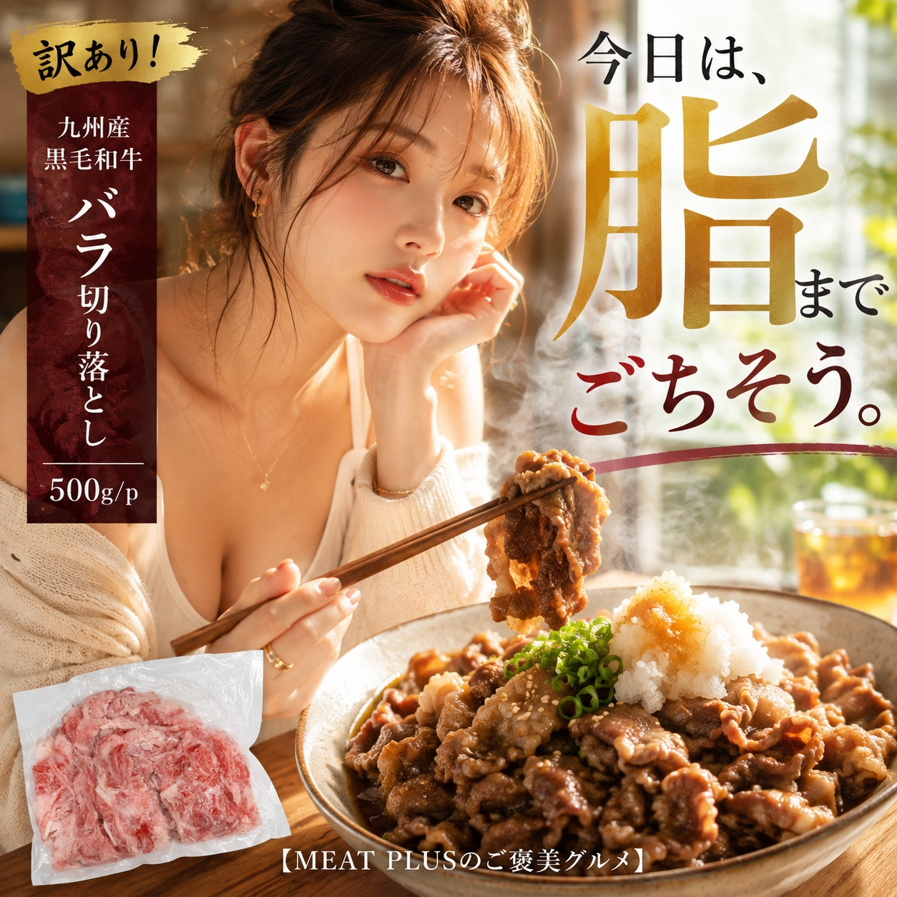
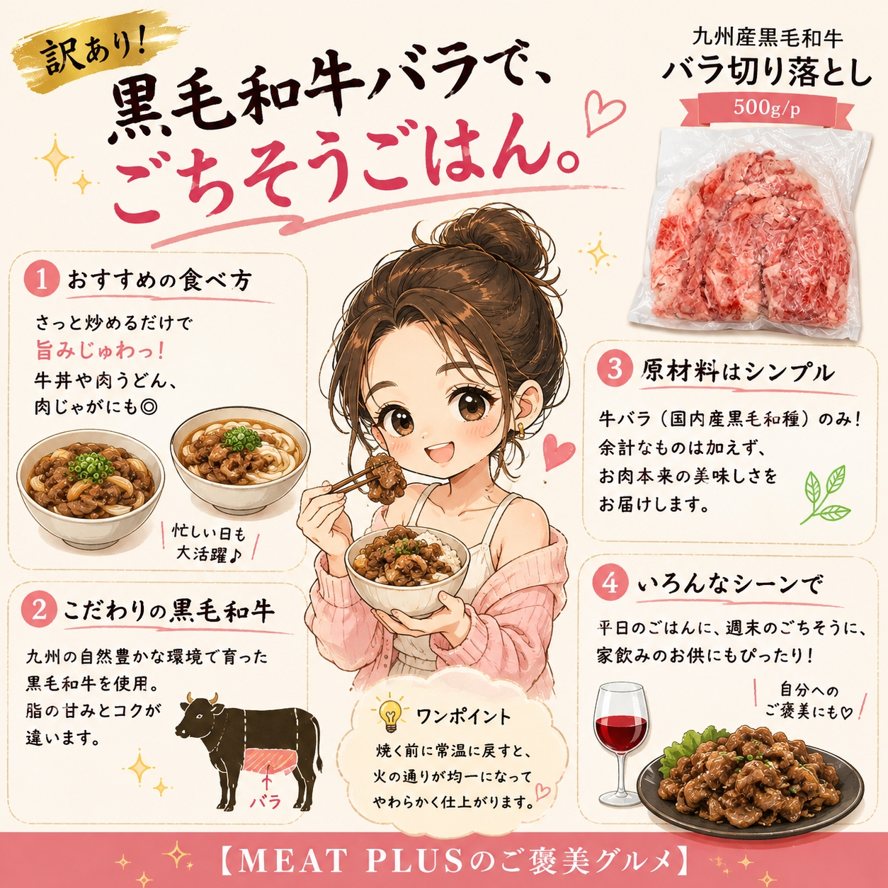
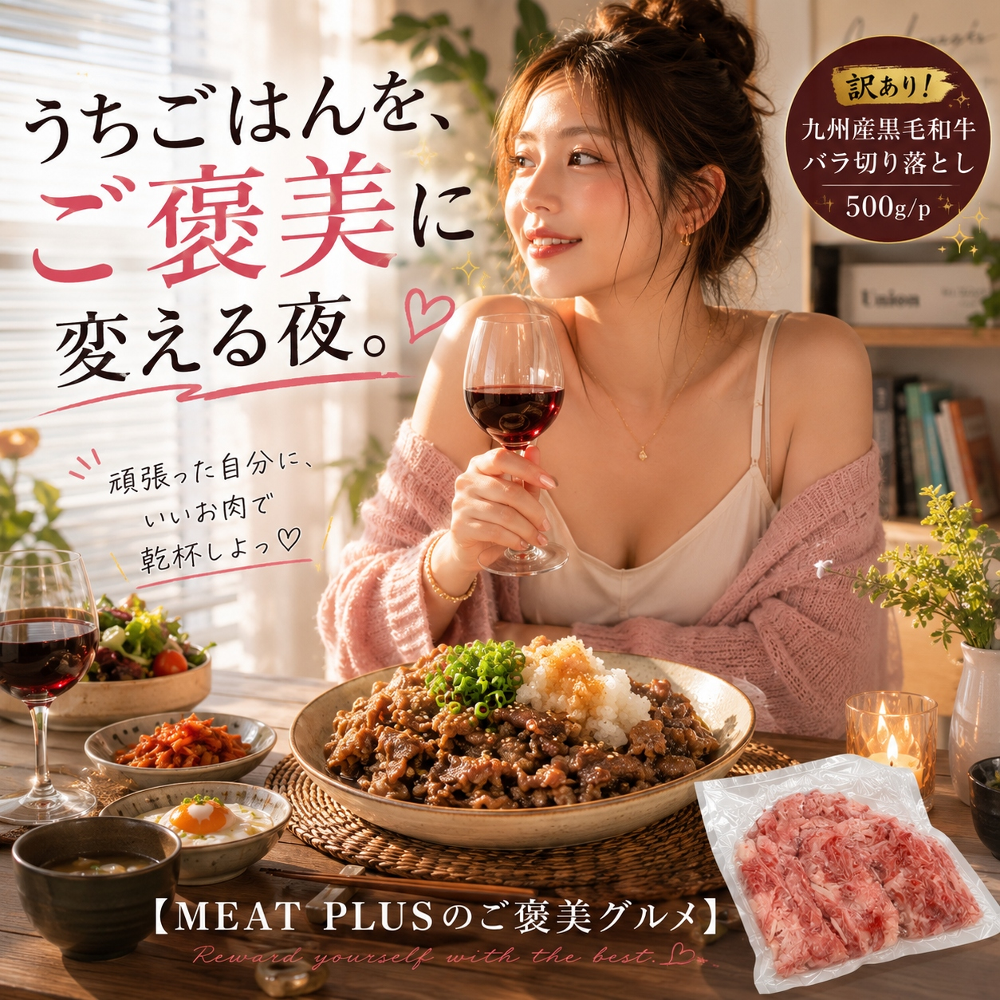

SCENE 01

a 牛肉
A4等級以上の旨みをご家庭で。九州産黒毛和牛の訳あり切り落とし。
今日の夕食は、ちょっと贅沢に黒毛和牛はいかがですか。九州の豊かな自然に育まれた、A4等級以上の黒毛和牛から、旨みたっぷりのバラ肉を切り落としにしました。本商品は、食品ロス削減への貢献を目指し、形を整えるためのトリミングをあえて行わない「訳あり品」です。そのため、お肉の形は不揃いで、脂身が多い部分も含まれますが、その脂の甘みこそが黒毛和牛の美味しさの証。お口の中でとろける上質な脂と、濃厚な赤身のコクが織りなすハーモニーは格別です。使いやすい500gの冷凍パックなので、牛丼やすき焼き、肉じゃがなど、いつものお料理を手軽にワンランクアップさせてくれます。冷凍庫にこれがあるだけで、毎日の食卓がもっと豊かに、もっと楽しくなる。そんな小さな幸せをお届けします。
公式サイトへ移動します。価格・在庫・配送条件は移動先で最終確認してください。



PRODUCT INFORMATION
牛バラ（国内産黒毛和種）
MEAT PLUS OFFICIAL SHOP
仕入れ・加工・梱包・発送まで自社で行うMEAT PLUSの公式オンラインショップでご注文いただけます。
公式オンラインショップで購入する